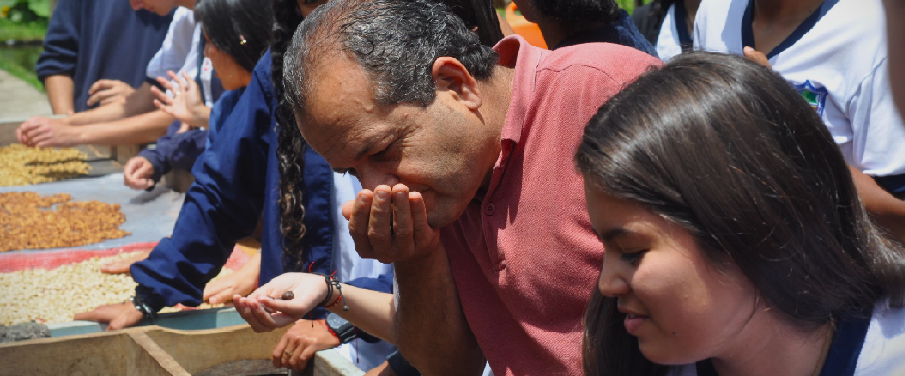
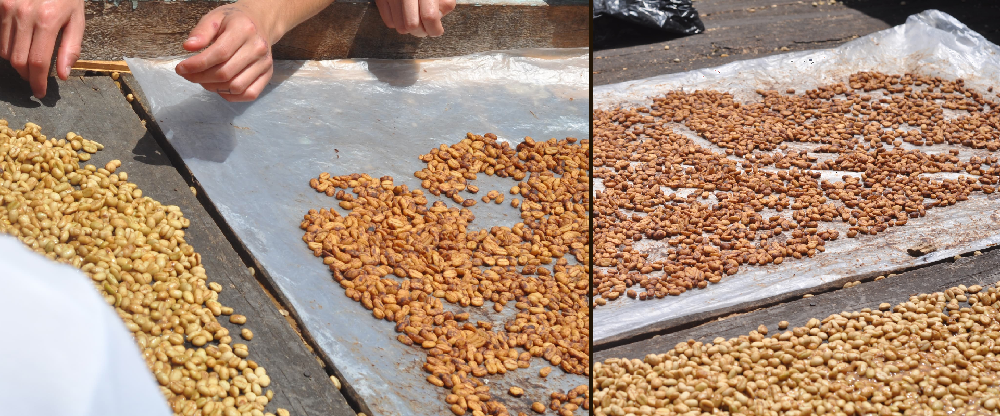
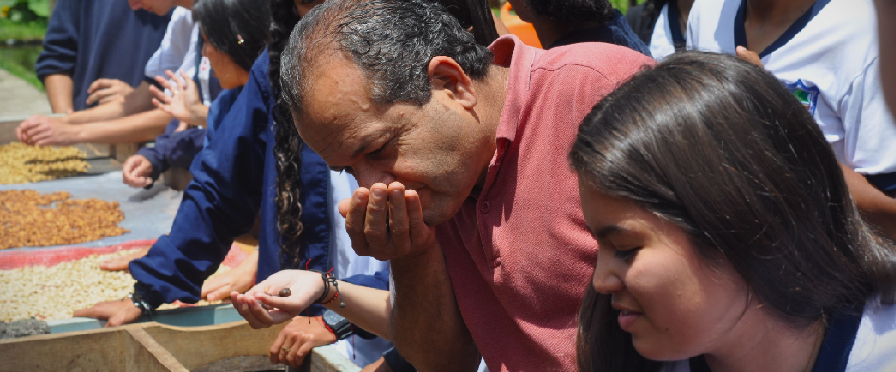
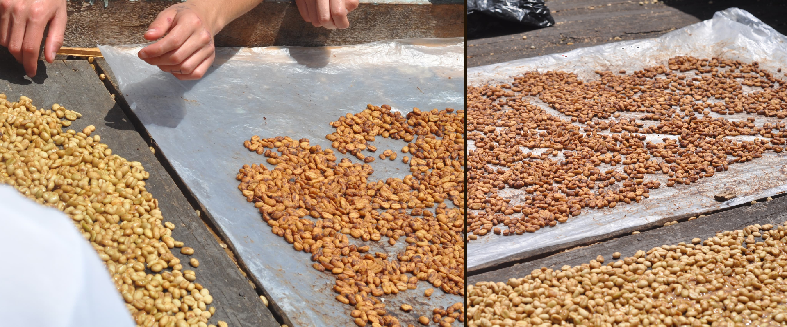

El Café Especial de la
Institución Técnica Agropecuaria de Támesis
Un Sabor que Educa y Trasciende
En el corazón de Támesis, un pintoresco municipio de Antioquia, se encuentra una
Institución Educativa
donde los estudiantes tienen un propósito único y especial: la producción de café.
Café Especial:
En la Institución Técnica Agropecuaria de Támesis, los estudiantes no solo asisten a clases,
sino que también son aprendices apasionados en la producción de café especial. Este café es
mucho más que una simple bebida; es un producto que llevo el proceso desde la siembra hasta
el café en listo para comercializar hecho por los estudiantes de undécimo grado.
Un Aprendizaje de Valor:
Los estudiantes que participan en el cultivo de café especial no solo están adquiriendo habilidades
agrícolas sino también responsabilidad y compromiso de los estudiantes.
Futuro Brillante:
Este proyecto no solo enriquece la educación de los estudiantes, sino que también les brinda
oportunidades de futuros caficultores o conocedores del tema.
Un legado para el Colegio:
El café especial producido por los estudiantes no es solo un producto de alta calidad; es un
legado que perdurará a través de las generaciones. Es una manifestación tangible de la dedicación
y la pasión que estos jóvenes tienen por su institución educativa y su comunidad.
Instituto Técnico Agropecuario de Támesis
TRABAJO Y CORAZÓN POR NUESTROS CAMPOS